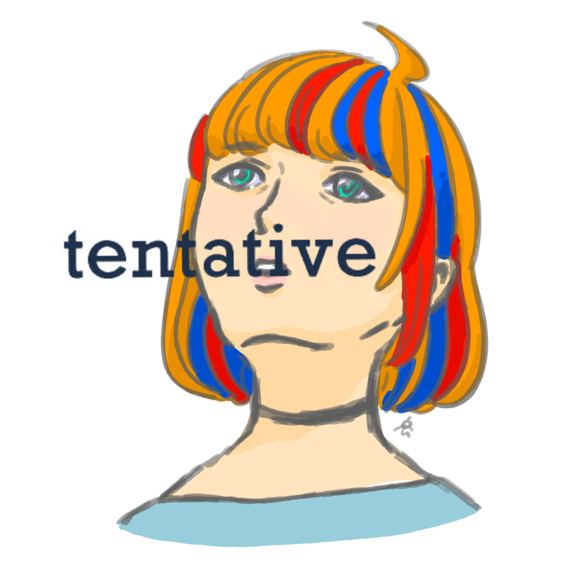

Bad Luck Charm – Official Music Video

alternative rock band from Japan
Bad Luck Charm – Official Music Video
1997 – AM/FM Acoustic Session
Fall to the Light – AM/FM Acoustic Session
live at 武蔵境STATTO – 2026
Weekend – Official Music Video
tentative は日本のオルタナティブロックバンド。
2024年に25曲入りの『A Sonic Tapestry』、2026年8月に『After the Weather』を発表。
バンド名には「暫定的」「実験的」「あやふや」といった意味がある。結果がまだ出ておらず、自分たちでどうにでも変えられる——という肯定的な意味に取れるところが決め手になった。好きな blur、pavement と同じく英単語ひとつであることも理由のひとつ。
ライブのお誘い・お問い合わせは、X または Instagram の DM へどうぞ。